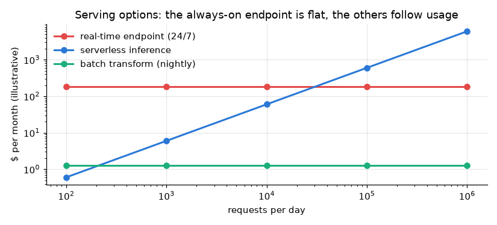
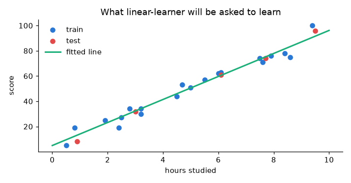

The last platform in the course. SageMaker is AWS's fully managed home for building, training and deploying models: you write a notebook in Studio, put data in S3, hand a training job to a machine that exists only while it runs, and turn the result into an HTTPS endpoint with one line. The instructor trains a built-in linear-learner regression on a small dataset, deploys it, calls it, and then spends the end of the chapter on the thing that bites people: deleting it all again.
The instructor's definition: a complete, fully managed platform where you build, train and deploy machine-learning models. AWS provides the configuration, the setup and the instances; you provide the data and the code.
His reason for using it is concrete: on your own laptop, a big dataset may not fit in memory and a big model may not train at all. On SageMaker you pick an instance that is big enough, use it for the minutes you need it, and give it back.
Everything in chapters 16–21 was you assembling the machinery: Docker, a registry, CI/CD, a cluster. SageMaker is the same machinery rented as a service. The instructor's warning, repeated three times, is the price: "SageMaker is a little bit costly — take care about the cost."
Search for Amazon SageMaker AI in the console ("build, train and deploy machine learning models" — not the other SageMaker entry), pick a region, then set up the working environment once:
Studio also offers Code Editor (VS Code in the browser), RStudio, Canvas (no-code ML) and a managed MLflow — the same MLflow from chapters 14–15, hosted by AWS.
The instructor's data is a 25-row "hours studied → exam score" table from Kaggle, a plain regression. He skips EDA on purpose: the point is the platform. Click any block to see what it does and why.
fit() and deploy() really callThe SDK is a thin wrapper over five API calls. Knowing them is what lets you automate SageMaker from CI, Step Functions or Terraform — and it's a common interview question.
| SDK line | API call | What AWS does |
|---|---|---|
estimator.fit({"train": …}) | CreateTrainingJob | starts an instance, pulls the container, mounts S3 data at /opt/ml/input/data/train, runs it, copies /opt/ml/model to S3 as model.tar.gz, terminates the instance |
estimator.deploy(...) | CreateModel | records "this image + these weights + this role" |
CreateEndpointConfig | records instance type, count and the traffic split across production variants | |
CreateEndpoint | starts the instances and puts an HTTPS endpoint in front of them | |
predictor.predict(x) | InvokeEndpoint(sagemaker-runtime) | serialises your payload, signs the request with your IAM credentials, returns the model's response |
predictor.delete_endpoint() | DeleteEndpoint | stops the instances — the only step that stops the hourly charge |
Three objects for deployment looks like overhead until you need them: a second production variant in the same config gives you an A/B test or a canary by weight, and UpdateEndpoint swaps to a new config with no downtime.
The hands-on notebook makes exactly these calls against moto, so you can read the real request shapes — including the training job's InputDataConfig channels and the endpoint config's variants — without an AWS bill. Results are in the hands-on section.
| Option | What you write | When |
|---|---|---|
| Built-in algorithm the video: linear-learner | hyper-parameters only, plus data in CSV or RecordIO-protobuf | a standard task (linear models, XGBoost, k-means, BlazingText…) and you want zero code |
| Script mode | your own train.py in an AWS framework container (SKLearn, PyTorch, XGBoost, HuggingFace), plus requirements.txt | the usual choice: your code, AWS's environment. Reads /opt/ml/input, writes /opt/ml/model |
| Your own container | a Docker image in ECR that implements train and serve | unusual dependencies, or you already containerised everything (chapters 16–18) |
| JumpStart | a few clicks | pre-trained and foundation models you want to fine-tune or deploy as-is |
About linear-learner specifically: it trains many models in parallel with different hyper-parameters (num_models) and keeps the best on a validation set, using SGD rather than the closed-form least squares that scikit-learn uses. That's why it has epochs, mini_batch_size and a choice of loss — the video picks absolute_loss, which is less sensitive to outliers than the usual squared loss.
The video shows the first one. The other three exist mostly to avoid paying for an idle instance:
| Option | How it's billed | Latency | Good for |
|---|---|---|---|
| Real-time endpoint | per instance-hour, always on | milliseconds, steady | steady traffic, tight latency; add auto scaling and ≥ 2 instances |
| Serverless inference | per request + duration | cold starts on the first call | spiky or low traffic, demos, internal tools |
| Asynchronous inference | per instance-hour, scales to zero | seconds to minutes; results land in S3 | large payloads, long inference (documents, video) |
| Batch transform | per instance-hour, only while the job runs | offline | scoring a whole table on a schedule — no endpoint at all |

Move the sliders: the endpoint is the only thing whose cost doesn't depend on how much you use it.
predictor.delete_endpoint(), or Inference → Endpoints → Delete. This is the expensive one.| Job | Earlier in the course | SageMaker equivalent |
|---|---|---|
| Experiment tracking | MLflow on EC2 (ch14–15, 17) | SageMaker Experiments, or managed MLflow inside Studio |
| Pipelines | DVC stages (ch11–12, 17) | SageMaker Pipelines (steps as a DAG, triggered from CI) |
| Model registry | MLflow registry + aliases (ch17) | SageMaker Model Registry with approval status |
| Serving | Flask + Docker on EC2 (ch16–18) | endpoints (real-time, serverless, async, batch) |
| CI/CD | GitHub Actions → ECR → EC2 (ch18) | the same pipeline calling SageMaker APIs, or SageMaker Projects |
| Scaling and self-healing | Kubernetes (ch21) | endpoint auto scaling, managed by AWS |
| Monitoring | Grafana (ch23) | SageMaker Model Monitor + CloudWatch |
The skills transfer in both directions: a SageMaker job is still a container reading data and writing a model, which is exactly what you built by hand in the earlier chapters.
get_image_uri is deprecated. The video imports it, then uses the current call — sagemaker.image_uris.retrieve("linear-learner", region). Never hard-code the registry account: it differs per region.sagemaker in the name), a bucket policy, or a region mismatch. Worth diagnosing rather than renaming.train only, and the model is never scored against the test set inside SageMaker. linear-learner uses a channel named validation for early stopping and model selection; without it, num_models: 32 has nothing principled to choose between. Evaluating afterwards (or with SageMaker's evaluation step) is what you'd do in practice.ml.c4 and ml.m4 are previous-generation; current m5/m7i/c6i instances are usually faster and cheaper. For a model this small, the smallest instance is plenty.CSVSerializer) and the response into Python (JSONDeserializer). The video adds them after hitting an error.initial_instance_count=1 means a single point of failure and no capacity headroom. Production endpoints run ≥ 2 instances with auto scaling.requirements.txt — and pinning versions is what makes the job reproducible (the lesson from Chapter 21's failed Docker build).projects/ch22_sagemaker/
├── sagemaker_walkthrough.ipynb # 8 parts: data → S3 → training job → endpoint → invoke → cost → delete
└── reports/ch22_data.png · ch22_cost.pngestimator.fit() buildsmoto stores the objects and returns the statuses, but it doesn't run the algorithm — the response we seeded is the local model's own prediction, so the two columns match by construction. The request and response shapes are the real ones.

Not run here (it's on your after-course to-do list): a real Studio domain, a real training job and an endpoint on the smallest instance — deleted the same day.
SageMaker when you want managed training and serving without operating infrastructure: on-demand GPUs billed per second, one-line deployment, built-in autoscaling, model monitoring and a registry — and your team is already on AWS. Self-managed when you need portability across clouds, have unusual runtime needs, run at a scale where per-hour managed pricing hurts, or already operate a cluster for other services. Many teams mix: train on SageMaker, serve on their own cluster, or the reverse.
estimator.fit().CreateTrainingJob is sent with the image, the role, hyper-parameters, input channels (S3 URIs), an output path and a resource config. AWS provisions the instance, pulls the container, downloads (or streams) the channels to /opt/ml/input/data/<channel>, runs the container's training entry point, writes logs and metrics to CloudWatch, copies /opt/ml/model to S3 as model.tar.gz, then terminates the instance. You pay for the seconds it ran.
Pick by traffic shape and latency budget, not by habit.
Create a new EndpointConfig with the new model and call UpdateEndpoint: SageMaker brings up the new fleet and shifts traffic (blue/green, with canary or linear traffic shifting and automatic rollback on CloudWatch alarms). For A/B tests, put two production variants in one config with weights, and compare metrics before shifting all traffic. Shadow testing sends a copy of live traffic to a candidate without returning its answers.
Keep training code in git. On merge, CI (Chapter 18) starts a SageMaker Pipeline: process → train → evaluate → conditional register. The model goes to the Model Registry as PendingManualApproval; approval (manual or automated against metric thresholds) triggers a deployment pipeline that updates the endpoint. EventBridge can re-trigger on new data or on drift alarms from Model Monitor.
Read the failure reason in DescribeTrainingJob, then the CloudWatch logs for the job. Common causes: the role can't read the S3 prefix, the data format or ContentType doesn't match the algorithm, a missing dependency in the container, the wrong feature_dim, or out-of-memory on a too-small instance. Reproduce locally first — the same container runs in local mode, which is far faster than waiting on a managed instance.
It's IAM-authenticated by default, so give callers a narrow role limited to sagemaker:InvokeEndpoint on that endpoint ARN. Add: VPC-only endpoints with private subnets and VPC endpoints, KMS encryption of volumes and S3 artifacts, network isolation for containers, no internet access for training jobs that don't need it, and CloudTrail for auditing. For public use, front it with API Gateway and authenticate there.
CreateTrainingJob runs the algorithm container on a temporary instance → model.tar.gz back in S3 → CreateModel + CreateEndpointConfig + CreateEndpoint → InvokeEndpoint for predictions.get_execution_role() → upload to S3 → image_uris.retrieve("linear-learner", region) → Estimator(...) → set_hyperparameters(feature_dim, predictor_type, mini_batch_size, epochs, num_models, loss) → fit() → deploy() → serialisers → predict().